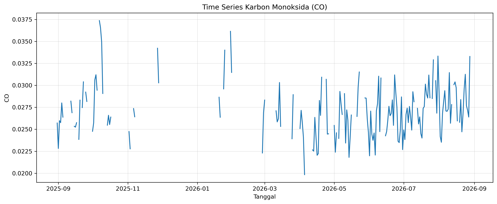
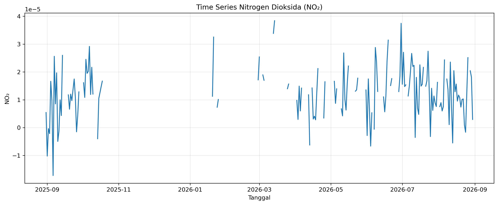
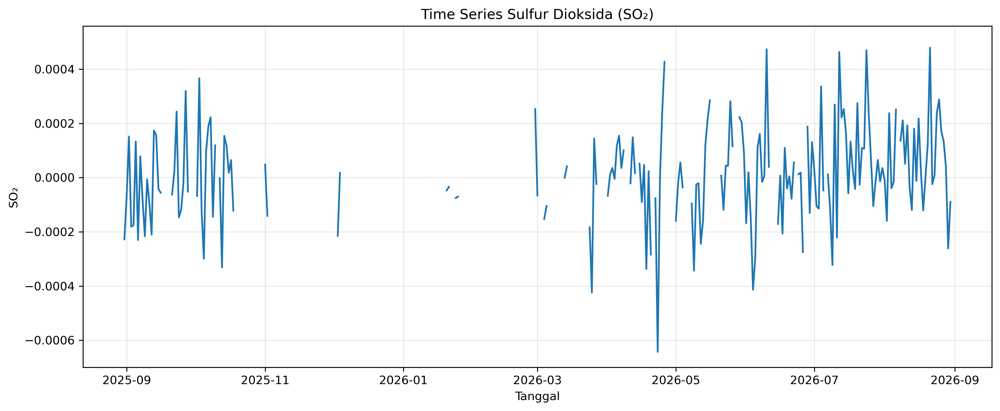

2. Data Understanding#
Tahap Data Understanding dilakukan untuk memahami sumber, struktur, karakteristik, serta kondisi awal data yang digunakan dalam proyek. Data yang dianalisis terdiri dari tiga parameter polutan udara, yaitu Karbon Monoksida (CO), Nitrogen Dioksida (NO₂), dan Sulfur Dioksida (SO₂) pada wilayah Kecamatan Kota Sumenep, Kabupaten Sumenep, Jawa Timur.
Data ketiga polutan berbentuk deret waktu (time series) harian. Pemahaman terhadap data dilakukan sebelum memasuki tahap pengolahan data, analisis time series, ekstraksi fitur, reduksi dimensi, dan clustering.
2.1. 1. Deskripsi Data#
Data yang digunakan dalam proyek terdiri dari tiga jenis polutan:
2.1.1. 1.1 Karbon Monoksida (CO)#
Karbon Monoksida (CO) merupakan salah satu parameter polutan yang dianalisis dalam proyek. Data CO disusun sebagai deret waktu harian sehingga perubahan nilainya dapat diamati berdasarkan waktu pengamatan.
2.1.2. 1.2 Nitrogen Dioksida (NO₂)#
Nitrogen Dioksida (NO₂) merupakan parameter polutan kedua yang digunakan. Data NO₂ juga berbentuk deret waktu harian dan digunakan dalam tahapan analisis serta ekstraksi fitur.
2.1.3. 1.3 Sulfur Dioksida (SO₂)#
Sulfur Dioksida (SO₂) merupakan parameter polutan ketiga. Sama seperti CO dan NO₂, data SO₂ disusun berdasarkan waktu pengamatan dan digunakan dalam tahapan pengolahan serta analisis berikutnya.
Ketiga data polutan selanjutnya dianalisis untuk memahami pola temporal sebelum dilakukan ekstraksi fitur menggunakan TSFEL.
2.2. 2. Sumber Data#
Data polutan diperoleh dari Sentinel-5P melalui layanan openEO pada Copernicus Data Space Ecosystem.
Sentinel-5P merupakan misi observasi bumi yang menyediakan pengamatan berbagai komponen atmosfer. Dalam proyek ini, parameter yang digunakan adalah:
CO (Carbon Monoxide)
NO₂ (Nitrogen Dioxide)
SO₂ (Sulfur Dioxide)
Pengambilan data dilakukan menggunakan Area of Interest (AOI) Kecamatan Kota Sumenep yang didefinisikan dalam format GeoJSON.
Periode data yang digunakan adalah:
31 Agustus 2025 sampai 30 Agustus 2026
Dengan resolusi temporal harian, diperoleh 365 observasi untuk masing-masing polutan.
Dengan demikian, data awal yang digunakan terdiri dari:
Polutan |
Periode |
Jumlah Observasi |
|---|---|---|
CO |
31 Agustus 2025 – 30 Agustus 2026 |
365 |
NO₂ |
31 Agustus 2025 – 30 Agustus 2026 |
365 |
SO₂ |
31 Agustus 2025 – 30 Agustus 2026 |
365 |
2.3. 3. Wilayah Studi dan Area of Interest (AOI)#
Wilayah yang digunakan dalam proyek adalah Kecamatan Kota Sumenep, Kabupaten Sumenep, Jawa Timur.
Batas wilayah penelitian disimpan dalam file:
KotaSumenep.geojson
File GeoJSON tersebut digunakan sebagai Area of Interest (AOI) dalam proses pengambilan data CO, NO₂, dan SO₂.
Untuk memahami lokasi dan cakupan wilayah penelitian, AOI divisualisasikan menggunakan library Folium dengan basemap OpenStreetMap.
2.3.1. 3.1 Code Visualisasi AOI#
import json
import folium
# Membaca file GeoJSON Kecamatan Kota Sumenep
with open("KotaSumenep.geojson", "r", encoding="utf-8") as f:
aoi = json.load(f)
# Membuat peta dasar OpenStreetMap
m = folium.Map(
location=[-7.01, 113.87],
zoom_start=12,
tiles="OpenStreetMap"
)
# Menambahkan batas wilayah Kecamatan Kota Sumenep
batas_wilayah = folium.GeoJson(
aoi,
name="Kecamatan Kota Sumenep",
style_function=lambda feature: {
"fillColor": "#6C63FF",
"color": "#4B44C5",
"weight": 3,
"fillOpacity": 0.25
},
tooltip=folium.GeoJsonTooltip(
fields=["NAMOBJ"],
aliases=["Wilayah:"]
)
).add_to(m)
# Menyesuaikan tampilan peta dengan batas wilayah
m.fit_bounds(batas_wilayah.get_bounds())
# Menambahkan kontrol layer
folium.LayerControl().add_to(m)
m
2.3.2. 3.2 Hasil Visualisasi AOI#
Peta berikut menunjukkan batas wilayah Kecamatan Kota Sumenep yang digunakan sebagai Area of Interest dalam pengambilan data ketiga polutan.
Peta bersifat interaktif sehingga dapat diperbesar, diperkecil, dan digeser untuk melihat lokasi penelitian secara lebih detail.
2.4. 4. Struktur Dataset#
Setelah data CO, NO₂, dan SO₂ diperoleh, dilakukan pemeriksaan struktur dataset untuk mengetahui jumlah observasi, jumlah kolom, nama variabel, serta contoh data pada masing-masing polutan.
Pemeriksaan dilakukan menggunakan library pandas pada tiga file data mentah:
CO_Kota_Sumenep_raw.csvNO2_Kota_Sumenep_raw.csvSO2_Kota_Sumenep_raw.csv
2.4.1. 4.1 Pemeriksaan Struktur Data#
Code berikut digunakan untuk membaca dan melihat struktur awal ketiga dataset.
import pandas as pd
# Membaca data mentah masing-masing polutan
co = pd.read_csv("CO_Kota_Sumenep_raw.csv")
no2 = pd.read_csv("NO2_Kota_Sumenep_raw.csv")
so2 = pd.read_csv("SO2_Kota_Sumenep_raw.csv")
print("=== DATA CO ===")
print("Ukuran data :", co.shape)
print("Nama kolom :", co.columns.tolist())
display(co.head())
print("\n=== DATA NO2 ===")
print("Ukuran data :", no2.shape)
print("Nama kolom :", no2.columns.tolist())
display(no2.head())
print("\n=== DATA SO2 ===")
print("Ukuran data :", so2.shape)
print("Nama kolom :", so2.columns.tolist())
display(so2.head())
2.4.2. 4.2 Hasil Pemeriksaan Struktur Data#
Berdasarkan hasil pemeriksaan, ketiga dataset memiliki jumlah observasi yang sama, yaitu 365 baris dan masing-masing terdiri dari 2 kolom.
Dataset |
Jumlah Baris |
Jumlah Kolom |
Nama Kolom |
|---|---|---|---|
CO |
365 |
2 |
|
NO₂ |
365 |
2 |
|
SO₂ |
365 |
2 |
|
Kolom date menunjukkan waktu pengamatan, sedangkan kolom CO, NO2, dan SO2 berisi nilai masing-masing polutan.
2.4.3. 4.3 Contoh Data CO#
Lima observasi pertama data CO adalah:
No. |
date |
CO |
|---|---|---|
0 |
2025-08-31 00:00:00+00:00 |
[0.0257152002304792] |
1 |
2025-09-01 00:00:00+00:00 |
[0.0228213109076023] |
2 |
2025-09-02 00:00:00+00:00 |
[0.0259814858436584] |
3 |
2025-09-03 00:00:00+00:00 |
[0.0257595013827085] |
4 |
2025-09-04 00:00:00+00:00 |
[0.0280019156634807] |
2.4.4. 4.4 Contoh Data NO₂#
Lima observasi pertama data NO₂ adalah:
No. |
date |
NO2 |
|---|---|---|
0 |
2025-08-31 00:00:00+00:00 |
5.424441e-06 |
1 |
2025-09-01 00:00:00+00:00 |
-1.021453e-05 |
2 |
2025-09-02 00:00:00+00:00 |
-3.703151e-07 |
3 |
2025-09-03 00:00:00+00:00 |
-2.147225e-06 |
4 |
2025-09-04 00:00:00+00:00 |
1.662965e-05 |
2.4.5. 4.5 Contoh Data SO₂#
Lima observasi pertama data SO₂ adalah:
No. |
date |
SO2 |
|---|---|---|
0 |
2025-08-31 00:00:00+00:00 |
-0.000228 |
1 |
2025-09-01 00:00:00+00:00 |
-0.000068 |
2 |
2025-09-02 00:00:00+00:00 |
0.000152 |
3 |
2025-09-03 00:00:00+00:00 |
-0.000181 |
4 |
2025-09-04 00:00:00+00:00 |
-0.000176 |
2.4.6. 4.6 Interpretasi Struktur Data#
Hasil pemeriksaan menunjukkan bahwa ketiga dataset mempunyai 365 observasi harian, sesuai dengan periode pengamatan selama satu tahun. Setiap dataset memiliki satu variabel waktu (date) dan satu variabel nilai polutan.
Pada data mentah CO, nilai pada kolom CO masih terlihat dalam bentuk seperti [0.0257152002304792]. Kondisi format data tersebut akan diperiksa lebih lanjut pada tahap Data Preparation sebelum data digunakan dalam analisis berikutnya.
Sementara itu, data NO₂ dan SO₂ pada tampilan awal sudah menunjukkan nilai numerik. Pada data mentah NO₂ dan SO₂ juga terlihat adanya nilai negatif. Pada tahap Data Understanding, nilai tersebut dicatat sebagai karakteristik data awal dan belum dilakukan perubahan terhadap nilainya.
2.5. 5. Pemeriksaan Data Awal#
Pemeriksaan kondisi awal data dilakukan untuk mengetahui tipe data, keberadaan missing value, data duplikat, rentang waktu pengamatan, serta jumlah tanggal unik pada masing-masing dataset.
2.5.1. 5.1 Code Pemeriksaan Data#
# Mengubah kolom tanggal menjadi datetime
co["date"] = pd.to_datetime(co["date"])
no2["date"] = pd.to_datetime(no2["date"])
so2["date"] = pd.to_datetime(so2["date"])
datasets = {
"CO": co,
"NO2": no2,
"SO2": so2
}
for nama, df in datasets.items():
print(f"=== {nama} ===")
print("Tipe polutan :", df[nama].dtype)
print("Missing date :", df["date"].isnull().sum())
print("Missing polutan :", df[nama].isnull().sum())
print("Duplikat :", df.duplicated().sum())
print("Tanggal awal :", df["date"].min())
print("Tanggal akhir :", df["date"].max())
print("Tanggal unik :", df["date"].nunique())
print()
2.5.2. 5.2 Hasil Pemeriksaan#
Hasil pemeriksaan kondisi awal ketiga dataset adalah sebagai berikut:
Pemeriksaan |
CO |
NO₂ |
SO₂ |
|---|---|---|---|
Tipe data polutan |
|
|
|
Missing value tanggal |
0 |
0 |
0 |
Missing value polutan |
0 |
190 |
158 |
Baris duplikat |
0 |
0 |
0 |
Jumlah tanggal unik |
365 |
365 |
365 |
Tanggal awal |
31 Agustus 2025 |
31 Agustus 2025 |
31 Agustus 2025 |
Tanggal akhir |
30 Agustus 2026 |
30 Agustus 2026 |
30 Agustus 2026 |
2.5.3. 5.3 Interpretasi Hasil Pemeriksaan#
Ketiga dataset memiliki 365 tanggal unik dengan periode pengamatan yang sama, yaitu mulai 31 Agustus 2025 hingga 30 Agustus 2026. Tidak ditemukan missing value pada kolom date dan tidak ditemukan baris duplikat pada ketiga dataset.
Namun, kondisi awal nilai polutan berbeda pada masing-masing dataset. Data CO tidak memiliki missing value, tetapi kolom CO masih terbaca sebagai tipe data object. Hal ini sesuai dengan tampilan awal data CO yang nilainya masih ditulis dalam bentuk seperti [0.0257152002304792].
Pada data NO₂ ditemukan 190 missing value, sedangkan pada data SO₂ ditemukan 158 missing value. Kedua kolom polutan tersebut sudah terbaca sebagai tipe data float64.
Temuan tersebut menunjukkan bahwa data mentah masih memerlukan tahap persiapan sebelum digunakan dalam analisis selanjutnya. Proses penyesuaian tipe data CO dan penanganan missing value pada NO₂ dan SO₂ akan dijelaskan pada tahap Data Preparation.
2.6. 6. Statistik Deskriptif#
Statistik deskriptif digunakan untuk memberikan gambaran awal mengenai karakteristik data melalui ukuran-ukuran statistik seperti rata-rata, standar deviasi, nilai minimum, kuartil, median, dan nilai maksimum.
Pada tahap ini, statistik dihitung berdasarkan data mentah yang masih berada pada tahap Data Understanding. Oleh karena itu, statistik numerik hanya dapat diperoleh secara langsung pada data NO₂ dan SO₂, sedangkan data CO masih memerlukan penyesuaian format pada tahap Data Preparation.
2.6.1. 6.1 Konsep Dasar Statistik Deskriptif#
Beberapa ukuran statistik yang digunakan adalah:
Count menunjukkan jumlah data yang memiliki nilai atau tidak missing.
Mean merupakan nilai rata-rata dari seluruh data yang tersedia.
Standard Deviation (Std) menunjukkan tingkat penyebaran data terhadap nilai rata-ratanya.
Minimum (Min) merupakan nilai terkecil pada data.
Kuartil 1 (25%) merupakan nilai yang membatasi 25% data terendah.
Median (50%) merupakan nilai tengah setelah data diurutkan.
Kuartil 3 (75%) merupakan nilai yang membatasi 75% data terendah.
Maximum (Max) merupakan nilai terbesar pada data.
Secara matematis, nilai rata-rata dapat dihitung menggunakan:
[ \bar{x} = \frac{1}{n}\sum_{i=1}^{n}x_i ]
dengan:
(x_i) = nilai observasi ke-(i)
(n) = jumlah observasi
(\bar{x}) = nilai rata-rata
Sedangkan standar deviasi sampel dapat dihitung menggunakan:
[ s = \sqrt{\frac{\sum_{i=1}^{n}(x_i-\bar{x})^2}{n-1}} ]
Standar deviasi yang lebih besar menunjukkan bahwa nilai data memiliki penyebaran yang lebih besar terhadap rata-ratanya.
2.6.2. 6.2 Code Statistik Deskriptif#
Pemeriksaan statistik deskriptif data mentah dilakukan menggunakan fungsi describe() pada Pandas.
print("=== STATISTIK DESKRIPTIF DATA MENTAH ===")
print("\n=== CO ===")
print(co["CO"].describe())
print("\n=== NO2 ===")
print(no2["NO2"].describe())
print("\n=== SO2 ===")
print(so2["SO2"].describe())
2.6.3. 6.3 Hasil Statistik Deskriptif#
Hasil statistik deskriptif data mentah adalah sebagai berikut:
Statistik |
NO₂ |
SO₂ |
|---|---|---|
Count |
175 |
207 |
Mean |
0.000013 |
0.00001319 |
Std |
0.000010 |
0.00017903 |
Min |
-0.000017 |
-0.00064280 |
25% |
0.000007 |
-0.00009339 |
50% (Median) |
0.000013 |
0.00000783 |
75% |
0.000018 |
0.00011911 |
Max |
0.000038 |
0.00050182 |
Jumlah count pada NO₂ dan SO₂ tidak mencapai 365 karena pada pemeriksaan sebelumnya ditemukan missing value. NO₂ memiliki 175 nilai yang tersedia dan 190 missing value, sedangkan SO₂ memiliki 207 nilai yang tersedia dan 158 missing value.
2.6.4. 6.4 Kondisi Statistik Data CO#
Pada data mentah CO, fungsi describe() menghasilkan:
count 365
unique 199
top [None]
freq 167
Hasil tersebut berbeda dari NO₂ dan SO₂ karena kolom CO masih terbaca sebagai tipe data object. Selain itu, nilai [None] muncul sebanyak 167 kali.
Oleh karena itu, nilai statistik numerik seperti mean, standar deviasi, minimum, kuartil, median, dan maksimum belum dihitung pada tahap ini. Penyesuaian format data CO akan dilakukan pada tahap Data Preparation sebelum analisis numerik berikutnya.
2.6.5. 6.5 Interpretasi Statistik Deskriptif#
Pada data mentah NO₂, nilai rata-rata yang diperoleh adalah sekitar 0.000013, dengan standar deviasi sekitar 0.000010. Nilai NO₂ yang tersedia berada pada rentang sekitar -0.000017 hingga 0.000038.
Pada data mentah SO₂, nilai rata-rata adalah sekitar 0.00001319, sedangkan standar deviasinya sekitar 0.00017903. Nilai yang tersedia berada pada rentang sekitar -0.00064280 hingga 0.00050182. Standar deviasi SO₂ yang lebih besar daripada NO₂ menunjukkan bahwa nilai SO₂ yang tersedia memiliki penyebaran yang lebih besar terhadap rata-ratanya.
Hasil statistik ini masih menggambarkan kondisi data mentah. Karena masih terdapat missing value pada NO₂ dan SO₂ serta format data CO belum numerik, hasil tersebut belum digunakan sebagai statistik akhir setelah preprocessing.
2.7. 7. Eksplorasi Time Series Setiap Polutan#
Data CO, NO₂, dan SO₂ merupakan data deret waktu (time series) karena setiap nilai polutan memiliki informasi waktu pengamatan. Visualisasi time series dilakukan untuk melihat perubahan nilai masing-masing polutan selama periode pengamatan.
Eksplorasi dilakukan terhadap data mentah sebelum proses Data Preparation. Oleh karena itu, kondisi data seperti nilai yang belum tersedia (missing value) masih dipertahankan pada visualisasi.
2.7.1. 7.1 Konsep Dasar Time Series#
Time series merupakan sekumpulan observasi yang tersusun berdasarkan urutan waktu. Secara umum, data time series dapat dinyatakan sebagai:
[ X_t = {x_1, x_2, x_3, \ldots, x_n} ]
dengan:
(X_t) = deret waktu,
(x_t) = nilai observasi pada waktu ke-(t),
(t) = waktu pengamatan,
(n) = jumlah observasi.
Pada proyek ini, waktu pengamatan menggunakan interval harian selama periode 31 Agustus 2025 hingga 30 Agustus 2026 dengan total 365 tanggal pengamatan.
Visualisasi time series digunakan untuk mengamati perubahan nilai polutan berdasarkan waktu serta melihat kondisi awal ketersediaan data sebelum dilakukan tahap persiapan data.
2.7.2. 7.2 Persiapan Data CO untuk Visualisasi#
Berdasarkan pemeriksaan sebelumnya, kolom CO pada data mentah masih bertipe object dengan bentuk nilai seperti [0.0257152002304792]. Oleh karena itu, dibuat salinan data khusus untuk keperluan visualisasi tanpa mengubah file data mentah.
import numpy as np
import ast
co_plot = co.copy()
def ambil_nilai_co(x):
try:
nilai = ast.literal_eval(str(x))
if isinstance(nilai, list):
if len(nilai) == 0 or nilai[0] is None:
return np.nan
return float(nilai[0])
return float(nilai)
except:
return np.nan
co_plot["CO_numeric"] = co_plot["CO"].apply(ambil_nilai_co)
Konversi tersebut hanya digunakan agar nilai CO dapat divisualisasikan secara numerik. Proses persiapan data secara lengkap akan dibahas pada tahap Data Preparation.
2.7.3. 7.3 Time Series Karbon Monoksida (CO)#
Code yang digunakan untuk membuat visualisasi CO adalah:
import matplotlib.pyplot as plt
plt.figure(figsize=(12, 5))
plt.plot(co_plot["date"], co_plot["CO_numeric"])
plt.title("Time Series Karbon Monoksida (CO)")
plt.xlabel("Tanggal")
plt.ylabel("CO")
plt.grid(True, alpha=0.3)
plt.tight_layout()
plt.show()
Hasil visualisasi time series CO:
{kind=link}

Fig. 2.1 Time Series Karbon Monoksida (CO) di Kecamatan Kota Sumenep.#
Grafik menunjukkan perubahan nilai CO berdasarkan tanggal pengamatan. Pada visualisasi ini, nilai [None] yang terdapat pada data mentah direpresentasikan sebagai nilai kosong (NaN), sehingga bagian yang tidak memiliki nilai pengamatan dapat terlihat pada deret waktu.
2.7.4. 7.4 Time Series Nitrogen Dioksida (NO₂)#
Code yang digunakan untuk membuat visualisasi NO₂ adalah:
plt.figure(figsize=(12, 5))
plt.plot(no2["date"], no2["NO2"])
plt.title("Time Series Nitrogen Dioksida (NO₂)")
plt.xlabel("Tanggal")
plt.ylabel("NO₂")
plt.grid(True, alpha=0.3)
plt.tight_layout()
plt.show()
Hasil visualisasi time series NO₂:
{kind=link}

Fig. 2.2 Time Series Nitrogen Dioksida (NO₂) di Kecamatan Kota Sumenep.#
Grafik NO₂ menunjukkan adanya bagian deret waktu yang terputus. Kondisi tersebut berkaitan dengan 190 missing value yang ditemukan pada data mentah NO₂. Matplotlib tidak menghubungkan garis pada observasi yang bernilai NaN, sehingga periode yang tidak memiliki nilai pengamatan terlihat sebagai celah pada grafik.
2.7.5. 7.5 Time Series Sulfur Dioksida (SO₂)#
Code yang digunakan untuk membuat visualisasi SO₂ adalah:
plt.figure(figsize=(12, 5))
plt.plot(so2["date"], so2["SO2"])
plt.title("Time Series Sulfur Dioksida (SO₂)")
plt.xlabel("Tanggal")
plt.ylabel("SO₂")
plt.grid(True, alpha=0.3)
plt.tight_layout()
plt.show()
Hasil visualisasi time series SO₂:
{kind=link}

Fig. 2.3 Time Series Sulfur Dioksida (SO₂) di Kecamatan Kota Sumenep.#
Grafik SO₂ juga memperlihatkan bagian deret waktu yang terputus. Hal ini sesuai dengan hasil pemeriksaan data awal yang menunjukkan adanya 158 missing value pada data SO₂.
2.7.6. 7.6 Interpretasi Eksplorasi Time Series#
Visualisasi ketiga polutan menunjukkan bahwa CO, NO₂, dan SO₂ memiliki nilai yang berubah sepanjang waktu pengamatan. Selain memperlihatkan perubahan nilai polutan, visualisasi juga menunjukkan kondisi kelengkapan data mentah.
Data CO memiliki nilai [None] pada sejumlah observasi yang baru terlihat setelah isi kolom object diperiksa untuk keperluan visualisasi. Sementara itu, NO₂ memiliki 190 missing value dan SO₂ memiliki 158 missing value yang telah terdeteksi sebagai nilai kosong pada pemeriksaan data awal.
Oleh karena itu, hasil eksplorasi ini menjadi dasar untuk melakukan tahap Data Preparation, terutama dalam menyiapkan format numerik data CO dan menangani nilai yang tidak tersedia sebelum data digunakan untuk analisis serta ekstraksi fitur selanjutnya.
2.8. 8. Ringkasan Data Understanding#
Tahap Data Understanding dilakukan untuk memahami sumber, struktur, kondisi awal, serta karakteristik temporal data sebelum memasuki tahap persiapan dan analisis lebih lanjut.
Berdasarkan proses yang telah dilakukan, diperoleh beberapa hasil utama:
Data yang digunakan terdiri dari tiga parameter polutan, yaitu CO, NO₂, dan SO₂, yang diperoleh dari Sentinel-5P melalui openEO pada Copernicus Data Space Ecosystem.
Wilayah penelitian adalah Kecamatan Kota Sumenep, Kabupaten Sumenep, Jawa Timur, dengan batas wilayah yang didefinisikan menggunakan file
KotaSumenep.geojson.Periode pengamatan berlangsung dari 31 Agustus 2025 hingga 30 Agustus 2026, dengan 365 tanggal pengamatan untuk masing-masing polutan.
Ketiga dataset memiliki struktur awal sebanyak 365 baris dan 2 kolom, yaitu kolom
datedan kolom nilai masing-masing polutan.Tidak ditemukan baris duplikat dan seluruh dataset memiliki 365 tanggal unik.
Pada data mentah CO, kolom nilai masih bertipe
object. Hasil pemeriksaan isi data menunjukkan adanya representasi[None]sebanyak 167 observasi, sehingga data CO masih memerlukan penyesuaian sebelum digunakan sebagai data numerik.Data NO₂ memiliki 190 missing value, sehingga terdapat 175 nilai yang tersedia, sedangkan data SO₂ memiliki 158 missing value, sehingga terdapat 207 nilai yang tersedia.
Statistik deskriptif terhadap nilai yang tersedia menunjukkan bahwa NO₂ dan SO₂ memiliki karakteristik penyebaran yang berbeda. Statistik numerik CO belum dihitung pada data mentah karena format kolomnya belum numerik.
Visualisasi time series menunjukkan perubahan nilai CO, NO₂, dan SO₂ sepanjang periode pengamatan. Celah pada grafik menggambarkan adanya observasi yang belum memiliki nilai pada data mentah.
Berdasarkan hasil tersebut, data masih memerlukan proses Data Preparation sebelum digunakan untuk analisis selanjutnya. Tahap berikutnya akan berfokus pada penyesuaian format data, penanganan nilai yang tidak tersedia, serta pemeriksaan kembali hasil preprocessing sehingga data siap digunakan dalam analisis time series dan ekstraksi fitur.